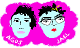

Una piba camina a su casa de noche es una historia interactiva desarrollada por Agus Las Peñas y Jael Caiero, desarrollada en 2021 en la cátedra de Tecnología Hipermedial de Licenciatura de Artes Electrónicas (UNTREF) e inspirada, entre otras cosas, por:
¡Gracias por jugar!
 Inicio